Working with Tickets
Creating, managing, and resolving support tickets.
Creating a ticket
Click New ticket from the dashboard or ticket list. A ticket is filed as the signed-in user. Staff and administrators can also file it for someone else (see Filing for someone else).
Filing for someone else
Staff and administrators see a Requester choice on the New ticket page, with three options:
- Me (the default): the ticket is yours.
- Another user: type at least two characters of a name or address and pick from the matches (at most ten). Disabled accounts, deleted accounts and the service accounts of OAuth clients are not offered.
- Email address: for someone with no account. A name is required with every address, whether or not it has an account, and a phone number is optional. The ticket is filed like a guest ticket, and the person is emailed the link to read and reply. This is refused while guest submission is off, because the link would not open. If the address belongs to an account, the ticket is filed for that account instead (the name is ignored).
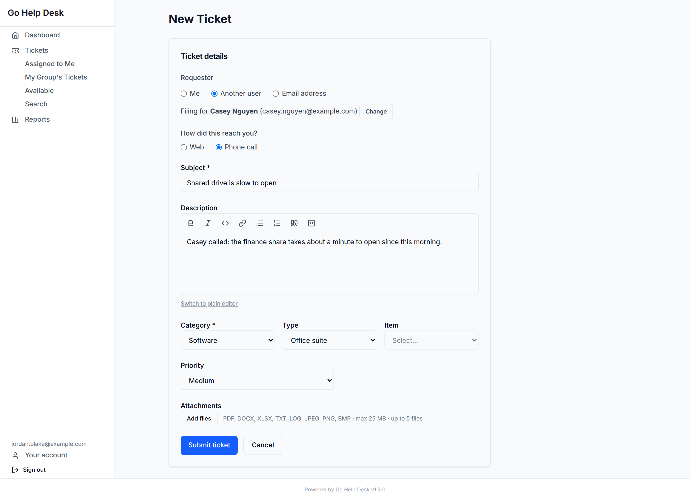
Filing for someone else: the Requester choice, and How did this reach you? with Phone call selected.
- The staff member is recorded as the one who filed it, in the ticket's history and in the audit log. The requester is its reporter.
- An existing user who is filed for gets the usual "We have received your ticket" email with a link to the ticket, once per address. Nothing is emailed when you file for yourself.
- A staff member can use a typed address 40 times an hour. After that the request is refused with
429and aRetry-Afterheader, and nothing is filed. It caps how many strangers get mail and how fast anyone can learn which addresses have accounts. Every typed address that passes validation counts, whether or not it has an account, and a count, once taken, is not given back; a request refused for a missing field does not count, and neither does picking a user from the list. The count is per staff member, is kept in the database (a restart does not clear it, and every server instance shares it), and is not configurable. - How did this reach you? When you file for someone else, the form asks whether the ticket came by Web (the default) or Phone call. It is not shown when you file for yourself. See How a ticket arrived.
- Requesters cannot file for anyone else; a requester who tries is refused with
403. - Staff and administrators see a Requester line (name and email) on every ticket page. Requesters never see it.
How a ticket arrived
Every ticket records how it arrived, and staff and administrators see it next to the opened date on the ticket page: via web, via API, via MCP, via guest form or via phone. The server works it out from the way the ticket came in; nobody types it. The one exception is Phone call, which staff pick when they file a ticket for someone else.
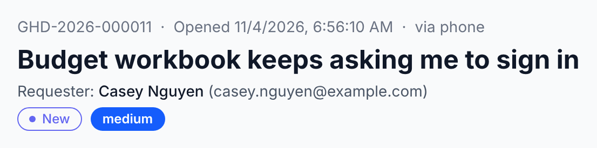
A ticket filed as a phone call shows via phone beside its opened date.
- A follow-up records how the follow-up itself was made, not how the original arrived. A follow-up made in the web app of a phone ticket is via web.
- Requesters and guests never see it, because via phone would tell them that staff filed the ticket.
- Tickets that existed when the help desk was upgraded to 1.3.0 all read via web, even if they came by API or MCP. There is no ticket-list filter for it yet.
Required fields
- Subject: a short summary, up to 500 bytes. Accented and non-Latin characters take two to four bytes each. This is the ticket's title across all views.
- Category — required. At least one Category must be configured before any ticket can be created.
Optional fields
- Description: the full detail of the request, up to 50,000 bytes, written with the formatting editor or as plain text (see Formatting text). Staff read this first, so include error messages, steps to reproduce and what you have already tried.
- Type — shown only if the selected Category has Types defined. Filters Items.
- Item — shown only if the selected Type has Items defined.
- Priority: defaults to Medium. Only staff and admins can choose it when they create a ticket. Staff and admins can change it afterwards; see Changing priority.
- Attachments — files can be attached at creation. See Attachments.
CTI cascade behavior
The three dropdowns are chained:
- Selecting a Category fetches and populates the Type dropdown. If the Category has no Types, the Type field is not shown.
- Selecting a Type fetches and populates the Item dropdown. If the Type has no Items, the Item field is not shown.
- Changing the Category clears the Type and Item selections.
- Changing the Type clears the Item selection.
Fields by role
| Field | Guest | User (logged in) | Staff / Admin |
|---|---|---|---|
| Name, email, phone | Name + email required; phone optional | — (uses account) | — |
| Category | Active only | Active only | All |
| Type | Not shown | Active only | All |
| Item | Not shown | Not shown | All |
| Priority | Defaults to Medium | Defaults to Medium | Selectable |
| Attachments | Not available | Yes | Yes |
Guest ticket submission New in 1.3.0
Guest submission is off by default. When it is enabled (Admin → System → Guest Access), the public form at /submit is reachable without logging in. Required: name, email, subject and category, which must be an active one. Phone is optional. Type, Item and priority are not shown and are not accepted: priority is always Medium on a guest ticket.
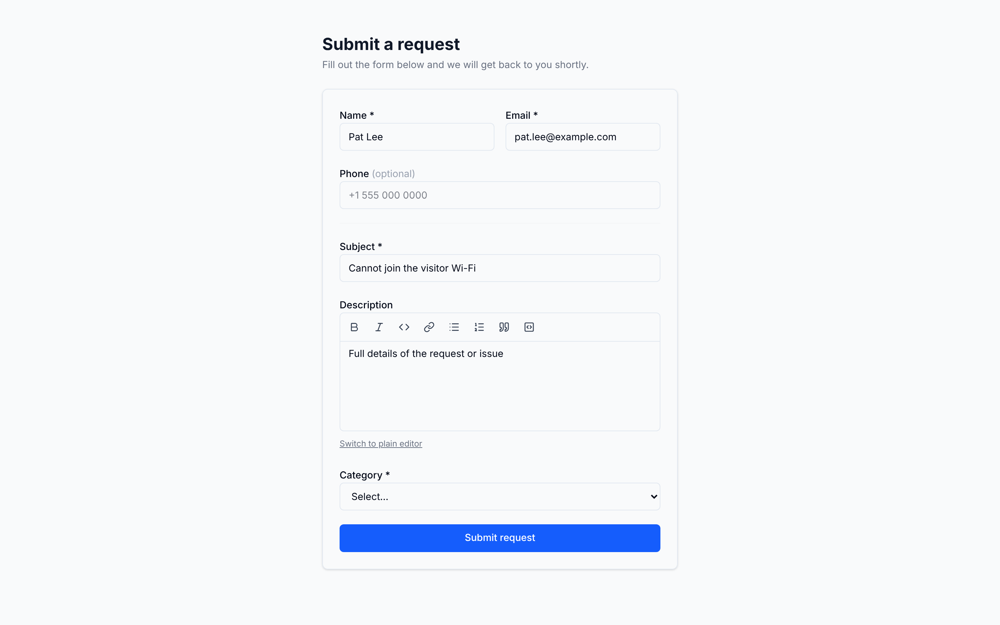
On success the page shows the ticket's tracking number, which can be quoted when following up by phone or email, and the server emails the address a private link to that one ticket. The link is the credential: there is no guest password and no guest account.
The guest link
- It opens one ticket and nothing else. A guest sees the subject, description, status, and the public replies — internal notes are never included, and staff names are not shown. They can post a reply, subject to the same lifecycle rules as anyone else, including the reopen window.
- Attaching files is off unless an administrator allows it. The setting Guests may attach files (Admin → System → Guest Access → Submissions) is off by default, including after an upgrade, and works only while guest submission is on. While it is off,
POST /api/v1/guest/attachmentsanswers the same generic404a bad link gets. When it is on, the guest page has an Add files button while the ticket is open, and says how many more files can be added (the count covers only files attached in the current visit to the page; the server holds the real limit). The submission form (/submit) has none: the link to attach from is emailed once the ticket exists. Uploads follow the same type, scanning and reputation rules as everyone else's and are download-only. The guest page does not list attachments, and a guest cannot download one. - Guest upload limits. Each file is held to the lower of Largest file a guest may attach (a slider that runs from 1 MB up to the per-file limit, 5 MB by default) and the per-file limit itself, 25 MB unless an administrator has changed it (see Attachments). The slider cannot be set above that limit. A file over the limit is refused with
413, and the message names the limit. At most 5 files per ticket from guests (an administrator can set 1 to 50;409 guest_attachment_limitover it), and at most 3 uploads an hour per guest link (1 to 30;429withRetry-Afterover it). A refusal decided before the scan (too large, wrong type, a bad name) does not use up the hour; one decided after it, or a server fault, does. Refused attempts also share a budget of 20 an hour per ticket, charged before the hourly upload budget and given back when the upload succeeds or is turned away by the hourly limit, so reaching it never uses up an hourly upload. The hourly counts are kept in the database, so a restart does not clear them and every server instance shares them. All of these settings are session-only. - It is replaced every time the help desk writes to them. A staff reply, a status change, a resolve or a reopen by staff each send a fresh link and invalidate the previous one immediately. There is no grace period, so the newest email is the one that works.
- Closing the ticket stops the link being replaced, but does not revoke it. The last link sent still opens the ticket, read-only, until it expires. No mail is sent for the close. A guest can still open a follow-up from a closed ticket with the link.
- It expires 30 days after it was issued.
- Switching guest submission off suspends every link. While the setting is off, a guest link answers
404, the same as a link that never existed, so a guest in the middle of a conversation cannot read or reply. Links are suspended, not revoked: switch the setting back on and the ones that have not expired work again. - Lost it?
/tracktakes a tracking number and the email address and mails a new link, replacing the old one. It always answers the same way whether or not those details matched anything, so it cannot be used to find out which tickets exist. A ticket whose stored address is not ASCII cannot get a new link this way; follow-ups on it still work. One request per ticket every five minutes.
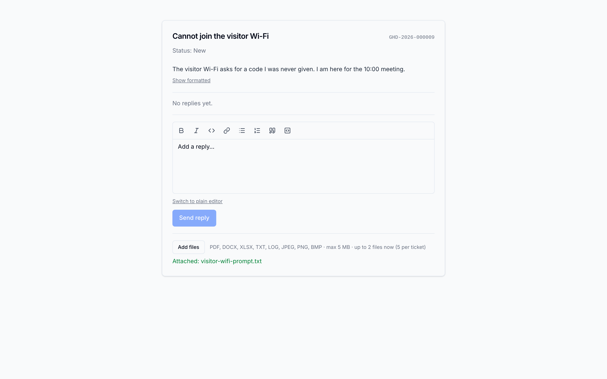
A guest's ticket page with Add files turned on. The count of files left covers this visit only.
The token is stored only as a hash, and the emailed link carries it after a # so that it never reaches a server log. The page strips it out of the address bar as soon as it loads, so it survives neither browser history nor a screenshot of the URL.
Guest notification email carries no ticket content — only the tracking number and the link. That is unchanged since v1.2.0.
Ticket lifecycle
A ticket moves through statuses over the course of its life. The default lifecycle is:
New → In Progress → Pending → Resolved → [reopen window] → Closed
↑ |
└── Reopened ──┘Statuses are customizable — admins can add intermediate statuses. The system statuses (New, Resolved, Closed) have fixed behavior regardless of their display name.
Status transitions
| Transition | Who can trigger it | Notes |
|---|---|---|
| Any status → any status | Staff, Admin | Only an administrator can move a ticket to Closed, and leaving Closed follows the rows below. |
| Any → Resolved | Staff, Admin | Optionally captures resolution notes. Starts the reopen window timer. |
| Resolved → Closed (automatic) | System | Triggered when the reopen window expires. A background sweep checks every five minutes. |
| Resolved → Closed (manual) | Admin only | Closes a ticket immediately, bypassing the reopen window. Use the Close Ticket button on the ticket detail page or POST /api/v1/tickets/{id}/close. |
| Resolved → Reopened (via reply) | User | Only within the reopen window. Automatically transitions the ticket to the reopen target status (New by default). |
| Closed → any | Nobody, by default | Admins, or staff and admins, only if Reopening closed tickets allows it. Requesters never can. Otherwise open a follow-up. |
| Resolved → any other status (manual) | Staff, Admin | An ordinary status change from the status picker, whatever the reopen window says. The Reopen action itself applies only to a Closed ticket. |
| Closed → Reopened (manual) | Admin, or staff and admin, per policy | Only when Reopening closed tickets allows the role. Requesters never can. |
Resolution notes
When marking a ticket Resolved, staff are prompted to optionally enter resolution notes — a brief summary of what was done and how the issue was fixed. These notes are visible to the submitter and are preserved when the ticket is reopened. They're useful for building a history of known fixes.
The reopen window
After a ticket is Resolved, the submitter has a configurable number of days to reopen it by replying. The default is 7 days. When a user adds a reply to a Resolved ticket within the window:
- The reply is saved.
- The ticket status is automatically changed to the reopen target status (New by default).
- The reopen is recorded in the ticket's Activity feed, and a
ticket.reopenedevent goes to subscribed webhooks.
After the window expires, the ticket is closed automatically. A closed ticket is read-only for its requester: they can still view it, but cannot reply. It stays Closed unless Reopening closed tickets allows staff or administrators to reopen it. The way on is a follow-up ticket.
The reopen window is set by the administrator, and 0 means no reopening at all: a Resolved ticket is closed, and read-only, on the next automatic sweep, about five minutes later.
Follow-up tickets
A Closed ticket is not reopened to continue its work. The way on is a follow-up: a new ticket that continues the work, linked to the closed ticket as its child. The closed ticket is the parent. The follow-up and its link are created together, so one never exists without the other, and opening a follow-up does not change the closed ticket.
Who can open one:
- Staff and admins can open a follow-up from any Closed ticket they can see. It copies the subject, description, category, type, item, priority and requester.
- The requester can open one from their own Closed ticket: an account holder through their account, or a guest through their link. It copies the subject, description and category, and the type for an account holder, never for a guest. It starts at Medium priority, with no item, unassigned, and with a fresh SLA clock.
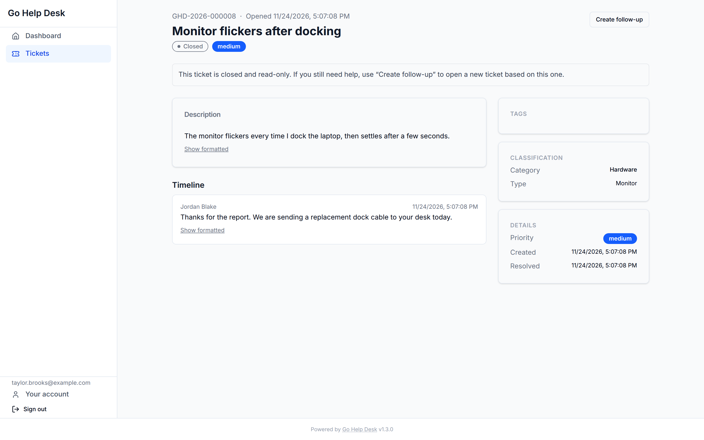
A requester can open one follow-up per closed ticket. A second request from a requester is refused with 409 follow_up_exists, and a follow-up opened by staff counts towards that one. Staff and administrators are not limited. Staff, admins and the requester open one with Create follow-up on the ticket. The API routes are POST /api/v1/tickets/{id}/follow-up for a signed-in user and POST /api/v1/guest/follow-up for a guest link. A follow-up is the only write a guest can make on a closed ticket.
Replies & internal notes
Public replies
Public replies are the standard response mechanism. They are visible to:
- The ticket submitter
- All staff and admins who have access to the ticket
- Guest users with a valid access link (for guest-submitted tickets)
When staff post a public reply with Send ticket update email to customer ticked, which is the default, the requester is emailed a notice with a link to the ticket. The email carries no reply text. Staff are not emailed about a staff reply or an internal note. They are emailed when the requester replies; see Email to staff.
Internal notes
Staff and admins can add internal notes to any ticket. Internal notes are:
- Never visible to users or guests, regardless of their access level.
- Not included in email notifications to users or guests.
- Visually distinguished in the ticket thread with a different background color and a "Internal note" label.
- Visible to all staff and admins who can see the ticket.
Use internal notes for:
- Recording investigation steps and findings
- Noting escalation decisions and reasons
- Coordinating with other staff members ("I'll contact the vendor, you handle the user")
- Linking to internal tools or runbooks
- Documenting failed solutions before finding the correct one
Formatting
A reply or internal note is limited to 50,000 bytes, the same as a description (bytes, not characters: letters outside basic English and emoji take 2 to 4 bytes each, so the form can stop you before 50,000 characters); a longer one is refused with 400 body_too_long and nothing is written. Replies, notes and descriptions can be formatted with Markdown (see Formatting text). Text written before 1.3.0 stays plain: line breaks are kept, and Markdown and HTML are shown exactly as typed unless the reader chooses Show formatted.
Replies are permanent
A reply or note cannot be edited or deleted once it is posted, by anyone. To correct one, post another.
Inserting canned responses
Staff and admins see an Insert canned response button above the reply box. It opens a searchable picker limited to the responses in scope for that ticket — global templates, plus any scoped to the ticket's category or category and type. Selecting one splices the template's body into the reply at the current cursor position (or appends it, if the box is empty), and the inserted text stays fully editable before sending. Managing the templates themselves is an admin task — see Canned Responses in the Admin Guide.
Replies in the Activity feed
Staff and administrators see each reply and internal note in the ticket's Activity panel as "name replied publicly" or "name added an internal note", with the time and no text; the text stays in the conversation under its usual visibility rules. A guest shows as "A guest" and a deleted account as "Someone". Replies and notes written before the upgrade to 1.3.0 do not appear. The same entries are in the admin Audit Log (administrators only), which has a Hide replies and notes option.
Linked tickets
Any ticket can be linked to any other ticket, regardless of status. Links are always bidirectional — adding a link on ticket A automatically creates the reverse link on ticket B.
Link types
| Type | Meaning | When to use |
|---|---|---|
related_to |
These tickets are related in some way. | They affect similar systems, came from the same user, or are otherwise connected but neither caused the other. |
parent_child |
One ticket is a sub-issue of another. | A "batch laptop deployment" parent ticket with individual "setup laptop for [user]" children. Or a widespread network outage parent with individual "I can't access the VPN" children. |
caused_by |
This ticket was caused by another ticket's issue. | A failed Windows update ticket caused several "Outlook won't open" tickets. |
duplicate_of |
This ticket is a duplicate of another. | A user submitted the same request twice. Mark the newer one as a duplicate of the original. |
Adding a link
From the ticket detail view, click Add link in the Linked tickets section. Search for the target ticket by ID or by subject keywords. Select the link type and confirm.
Removing a link
Click the × next to any linked ticket. This removes the link in both directions. Staff and admin only — users cannot modify links.
Resolving all the children at once
On a ticket that is the parent in at least one parent_child link, staff and admins see Resolve all children in the Linked tickets section. It asks for resolution notes once, and the same notes are recorded on every child it resolves.
- Only open children are resolved. The confirm button counts them (Resolve 3 children), and says how many that are already Resolved or Closed will be skipped. A child that is already resolved is never resolved a second time, so its own notes are not overwritten. If none is open, the button is disabled and reads All children are already resolved.
- Direct children only. Children of the children are left alone. If any of the children have children of their own, the form says so, naming up to five by tracking number, and tells you to resolve those from their own ticket.
- Each child is resolved on its own, one after another, exactly as if you had opened it and clicked Resolve: each gets its own Activity entry, notifications and SLA handling.
- A refusal does not stop the rest. When it finishes you get a report such as 2 of 3 resolved, 1 already resolved, followed by each child the server refused and the reason. The notes stay in the box, so you can fix the cause and run it again; only the children still open are touched.
Tags
Tags are free-form labels that staff can attach to any ticket. They appear in the ticket detail sidebar and are useful for grouping tickets by theme, campaign, affected system, or any other dimension that doesn't fit the formal Category/Type/Item hierarchy.
Adding a tag
In the Tags section of the ticket sidebar, type a tag name and press Enter — or pick a suggestion from the autocomplete dropdown. Tags are stored lowercase regardless of how they're typed.
- If the tag already exists and is active, it is applied immediately.
- If the tag is new, it is created automatically on first use.
- If the tag exists but has been deactivated by an admin, an error is shown. Only an admin can restore a deactivated tag — it cannot be re-created by staff.
Removing a tag
Click the × on a tag pill to remove it from the ticket. This does not delete the tag globally — it only removes the association with this ticket. Staff and admins only.
Autocomplete
As you type, existing active tags that match the prefix are shown as suggestions. Select a suggestion to apply it, or press Enter to create a new tag with the text you've typed. Tags with no matching suggestions show a "Press Enter to create…" hint.
Tag visibility
Tags are for staff. Only staff and admins can see, add or remove them; the requester never sees the tags on their ticket.
Admin tag management
Admins can deactivate inappropriate tags or restore previously deactivated ones from Admin → Tickets → Tags. See Tags in the Admin Guide for details.
Assignment
A ticket can be assigned to:
- A specific staff member: the ticket is in their Assigned to Me view, and they are emailed about it, unless they or an administrator have switched that email off. See Email to staff.
- A group: the ticket is in the My Group's Tickets view of every member of that group, under Group queue while nobody personally holds it. Useful when you want a team to handle the ticket without specifying an individual.
- Unassigned (no group and no person): the ticket is listed in the Available view. Administrators always see that view. Staff see it only while an administrator has ticked Staff under Admin → System → Privacy → Available queue; by default only administrators do. Anyone who can see the ticket can still find it through the Search view. See Ticket list views.
Who can assign
Staff and admins can assign tickets to any staff member or group, regardless of scope. This is intentional — cross-team escalation should not be blocked by routing rules. A ticket can be assigned to staff outside their normal scope, and it will appear in the assignee's Assigned to Me view.
Assign to me
Staff and admins see an Assign to me button in the Assignee panel of the ticket page. It is offered only while the ticket has no assignee, and not on a Resolved or Closed ticket; once anyone holds the ticket, you included, it is gone. It assigns the ticket to you and keeps the group the ticket is already assigned to. Picking a person from the list instead replaces the group, as before. Requesters never see the button.
Reassignment
Reassigning a ticket emails the new assignee, and the assigned group's members when it is assigned to a group, as described under Email to staff. The person who made the change is never emailed about it. Assigning a ticket to the person and group it already has, or clearing a ticket that is already unassigned, changes nothing and sends no email or webhook. The old assignee is not told. The change is recorded in the ticket's Activity feed, and a ticket.assigned event goes to subscribed webhooks. A reassignment also ends the old assignee's follow of the ticket, if they had one.
Assignment and scope
Scope controls which tickets a staff member can see. Assignment overrides this for the assignee: if you are assigned a ticket outside your scope, it appears in your Assigned to Me view. Scope narrows what staff can see only when Limit staff to their group scope is on under Admin → System → Privacy → Ticket visibility. It is off by default, and then every staff member can open any ticket and jump to it by its tracking number. With it on, a ticket outside a staff member's visibility answers as not found, even by its tracking number.
The queue views (Assigned to Me, My Group's Tickets and Available) list only their own tickets, and a search typed in one stays in it. Only the Search view covers every ticket you can see (see Ticket list views and Search and filters). With the limit on, the default view no longer shows the unassigned tickets in your categories. They are in Search, or in Available once an administrator has ticked Staff.
Changing priority
Staff and admins can change a ticket's priority after it is created. On the ticket page, the Details card has a Priority drop-down with Critical, High, Medium and Low. Pick a new value and it is saved straight away; the ticket, its Activity feed and the ticket lists refresh. A requester sees the priority as a plain badge and cannot change it.
- The SLA follows the new priority. The ticket is matched again against your SLA policies for its new priority and category, using the same order as when a ticket is created. A change by staff never restarts the clock. Only a reopen does; see Reopened tickets.
- Not on a Resolved or Closed ticket. The drop-down is greyed out with the note Priority cannot be changed on a resolved or closed ticket. The server refuses it too, with
409 ticket_closed, so nothing changes. - It is recorded. The change shows in the ticket's Activity feed as a priority change.
- If the server refuses a change for any other reason, the message is shown under the drop-down and the old priority stays.
Following a ticket
Staff and admins can follow a ticket to be emailed about it without being assigned to it. On the ticket page, the Followers card lists who follows the ticket and has a Follow button, which becomes Unfollow once you follow. It only ever changes your own follow.
- What a follower is emailed about. The ticket being assigned, its requester replying, and the ticket being reopened. These come under your Activity on tickets I'm assigned to or follow switch (see Email to staff), and an administrator's override of that switch applies to followers too. You are never emailed about your own change, and never twice for one event.
- You are not mailed as a follower of a ticket you hold. The assignee is not mailed as a follower, and neither are the members of an assigned group when the group itself is being mailed. For those events, their own switches decide.
- Reassigning ends the old assignee's follow. If you followed a ticket you were assigned, and it is then assigned to someone else or to nobody, your follow is removed. Click Follow again to keep the mail. Moving a ticket between groups does not touch anyone's follow.
- If you can no longer see the ticket (for example, staff were limited to their group scope), you are skipped when mail is sent but keep following, and are mailed again if you can see it again.
- Everyone on staff can see the list of followers. Following and unfollowing are written to the ticket's Activity feed. Administrators always see those entries; staff see them only if an administrator has turned on Staff can view follow history (see the Admin Guide). Requesters never see followers or follow entries.
- People only. An API key, an OAuth client or a service user cannot follow a ticket. Over the API,
PUTandDELETE /api/v1/tickets/{id}/followfollow and unfollow, andGET /api/v1/tickets/{id}/followerslists them.
Email to staff
Staff and admins are emailed about their own work, not only requesters about theirs. This needs email to be set up on the server; nothing is sent until then. Like every email from the help desk, these carry only the ticket's tracking number and a link, never the ticket's content.
Your account: Email about tickets
Under Your account, the Email about tickets section has four switches. All four are on by default. Requesters do not see this section.
| Switch | You are emailed when |
|---|---|
| Tickets assigned to me | A ticket is assigned to you. |
| Activity on tickets I'm assigned to or follow | A requester replies on a ticket assigned to you, or it is reopened. Also, for a ticket you follow: it is assigned, gets a requester's reply, or is reopened. |
| My groups' tickets | A ticket is assigned to a group you belong to. Also, on a group ticket that nobody personally holds: a requester replies, or it is reopened. |
| SLA alerts | An SLA target is breached or at risk on a ticket assigned to you, on a group ticket nobody personally holds, or on a ticket you follow. Sent only while an administrator has SLA alerts switched on. |
- You are never emailed about something you did yourself.
- A colleague's reply, and an internal note, never send mail. A staff member who filed a ticket and replies on it counts as the requester.
- A requester's reply on a ticket that has both an assignee and a group goes to the assignee only, not to the whole group.
- An administrator can force any of the four switches on or off for everyone; see the Admin Guide. When a switch is forced, your own setting is overridden.
Reopened tickets
A reopen is any move from Resolved or Closed back to an open status. All of these count: a requester replying to a Resolved ticket inside the reopen window (an account holder, or a guest through their link), staff or an administrator changing the status, and a forced reopen of a Closed ticket where Reopening closed tickets allows it. Each one does the following.
- The ticket is flagged. Staff and admins see a Reopened badge on the ticket and in the ticket lists while the ticket is open. It goes away when the ticket is resolved again. The number of reopens is counted for good and is never reset. Requesters do not see the badge.
- The priority goes up one level on the first reopen only (Low to Medium to High to Critical; Critical stays Critical). A second reopen flags the ticket again but does not raise the priority again. Because the priority changes, the ticket can match a different SLA policy. The change is recorded in the Activity feed.
- The SLA starts over, on every reopen. The earlier SLA record is kept, and staff and admins see an SLA restarted badge beside the SLA indicator when the earlier record had something met or breached; select it to see the earlier record. The Activity feed notes the restart. Nothing happens to the SLA while SLA tracking is switched off.
- Staff are emailed. The assignee, under Activity on tickets I'm assigned to or follow. The assigned group's members, under My groups' tickets, but only while nobody personally holds the ticket. The ticket's followers, whoever holds it. Each person gets one email, and the person who reopened the ticket gets none. See Email to staff.
- The change is recorded and announced. A status change out of Resolved or Closed is written to the Activity feed as a reopen, and subscribed webhooks receive
ticket.reopened, as they do for a requester's reply.
What requesters can and cannot see
A requester sees the ticket's current state and its public replies. They do not see the Activity feed (which now also lists replies and notes) or the status timeline of their own ticket (the API refuses those requests with 403), and the conversation no longer shows status-change events. They receive only these ticket fields: id, tracking number, subject, description, status, priority, category, type, item, created and resolved dates, the assignee's id, and resolution notes. Everything else is withheld, including the assigned group, the reporter, guest contact details, the closed and last-updated dates, its Pending timing, and the reopen count. A guest's view is the same, and it no longer includes the last-updated date.
Formatting text
Descriptions, replies and internal notes can be written in Markdown, through a formatting editor. The editor is in staff replies and notes, requester replies, the new ticket form, the guest form and guest replies. Its toolbar has Bold, Italic, Inline code, Link, Bulleted list, Numbered list, Quote and Code block. Switch to plain editor swaps it for an ordinary text box holding the same Markdown, and the plain box is also what you get while the editor loads or if it fails to load.
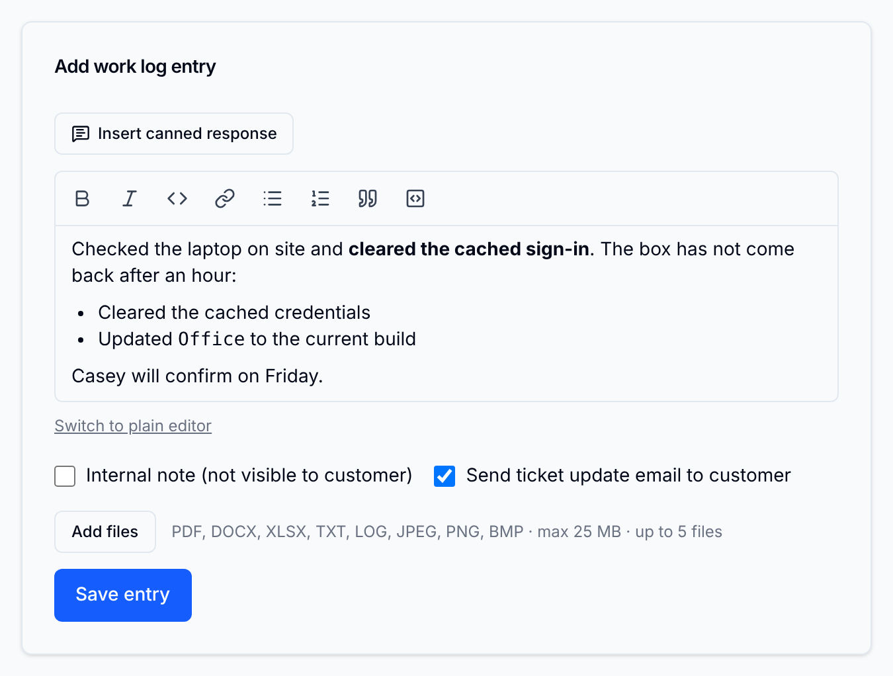
The formatting editor in a staff reply: a toolbar above the text, and a link to switch to a plain editor.
Old text stays plain
Each description and reply is stored with a format, plain or markdown. Everything written before 1.3.0 is plain text and is shown exactly as before. 1.2 promised Markdown but never rendered it, so nothing already in the database is reinterpreted. On a plain post, Show formatted shows it through the new renderer; on a Markdown post, Plain text shows the source exactly as stored, to copy it or check a suspicious link. Both buttons are the reader's choice: nothing is stored or sent.
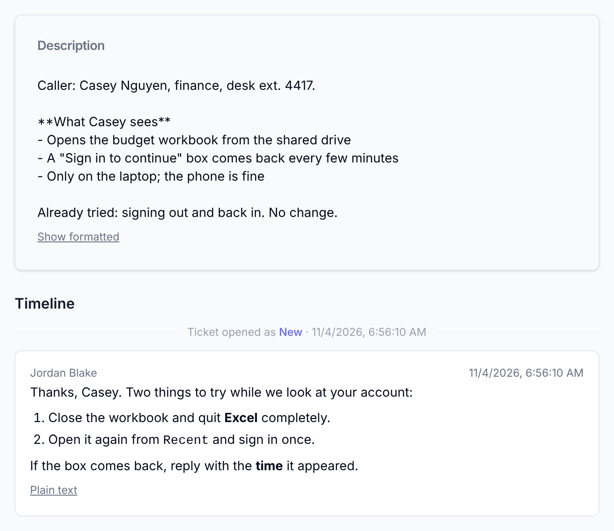
Older text stays plain, with a Show formatted link. A reply written in the editor is formatted, with a Plain text link to see its source.
What is shown, and what never is
- Supported: paragraphs, quotes, bulleted and numbered lists, code blocks, rules, tables, bold, italic, strike-through, inline code, line breaks and links. All headings show at one small size. Code in a fenced block is highlighted for 13 languages (bash, PowerShell, JSON, YAML, XML or HTML, SQL, JavaScript, TypeScript, Python, Go, INI, diff and plain text).
- No raw HTML. It is shown as text, so
<server01>reads as written. No images: an image is shown as the link "[image: alt]" and is never loaded. - Links open in a new tab and only
http,httpsandmailtoare links. The real host is shown after the link when the link text differs from it. Amailtolink with a query (a hiddencc,bcc,subjectorbody) is not linked, and a link to this help desk's own attachment addresses is not linked either (it says to open the file from the attachments list, where the scan and reputation warnings are). - Long or complex posts show as plain text. Text over 50,000 characters is never formatted, and a post that takes too long to format falls back to plain text with a note ("too long to format", "too complex to format"). A page that already shows a lot of formatted text leaves further posts as written.
- Older long posts are collapsed. Before 1.3.0 a reply had no length limit, so some stored posts are longer than 50,000 characters. Such a post shows its first 5,000 characters, a note that this is only part of the post, and a Show full text (size) button that draws all of it in one block. Selecting and copying that block returns exactly the stored text (a browser drops a trailing newline when copying, for any post). Nothing is cut or rewritten. The forms show a counter from 90% of the size limit and will not send more.
- A code block or table wider than the screen scrolls inside its own box; the page never scrolls sideways.
Webhooks, chat messages and email are unchanged: a webhook or chat message carries the Markdown source as text, and email carries no ticket text. Resolution notes, canned responses and settings stay plain text. A NUL character in text is refused with 400.
Custom fields
Admins can define additional fields (text, textarea, number, or select) and attach them to a category, a type or an item. A field appears on a ticket only where it is attached.
On the new-ticket form
- When you select a Category, Type, or Item, the fields attached to those with Show on new-ticket form turned on appear on the form. Requesters and guests do not pick an item, and a guest's form has no custom fields at all.
- A required field is marked with an asterisk, and the form will not submit until it is filled. Only the form holds to this: the server does not check it, so a script that creates a ticket through the API is not held to a required field.
- Fields appear grouped by level (the category's, then the type's, then the item's), and within a level by the order the admin set on the Custom Fields page. A field attached at more than one level appears once.
- A deactivated field is not offered. A select field offers only the options in use, not retired ones.
- A number field accepts only a number.
Through the API
Custom field values sent with POST /api/v1/tickets are written after the ticket exists, and never fail the request. A value that was not written is listed in a warnings array in the 201 response, one entry per dropped key, each with a reason: invalid_field_id, duplicate_field_id, not_on_ticket, inactive, retired_option, not_an_option, not_a_number or not_saved. An empty value means "no value" and is not a warning. The key is absent when nothing was dropped. Requesters receive it for the keys they sent. See the API reference.
On the ticket
After a ticket is created, custom field values appear in the Custom Fields sidebar card on the ticket detail page, in the same order as on the form:
- Staff and admins see every active field the ticket has, empty or not, and can click Edit to fill or change values at any time. Save sends only the fields they changed, and either all of those are saved or none are.
- A field that has been deactivated but holds a value is still shown, read-only. Staff and admins see it marked Inactive; requesters do not. Nobody can change or clear it. An inactive field with no value is not shown.
- A select value that has since been retired is still shown. It can be kept or replaced, but not chosen again.
- A field that holds a value but is no longer attached to the ticket's category, type or item is shown read-only after the others.
- Regular users see only the fields that hold a value, and the ticket page shows them read-only: only staff and admins get Edit. Through the API, a requester can still change the custom fields on their own ticket until it is Closed, after which the server answers
409 ticket_closed. If no values have been set, the card is not shown. Guests see no custom fields.
Custom fields are configured by admins under Admin → Tickets → Custom Fields, where each field is attached to the categories, types and items it belongs on (the same attachments can be made in Admin → Tickets → Categories). See the Admin Guide for details.
Attachments
Any logged-in user (including regular users) can attach files when creating a ticket. Attachments are listed on the ticket detail page and served through the API. Authentication is required to download. Reporters can also attach files to a reply, up to five per reply. A guest cannot attach a file on the submission form, and can attach one from the guest page only when an administrator allows it (see Guest ticket submission); a guest cannot download any attachment.
What the server does with an uploaded file changed substantially in 1.3.0. This section is the summary; the full account, content detection, the three storage tiers, the quarantine archive, and the optional reputation lookup, is on the Attachment Security page.
Limits
| Limit | Value |
|---|---|
| Maximum file size | 25 MB per file by default. An administrator can set it from 1 to 100 MB under Admin → System → File Attachments → File size. A file over the limit is refused with 413 too_large, and the message names the limit. It applies to staff, requesters and guests. A guest is held to the lower of this and their own limit. |
| Maximum filename length | 255 bytes, valid UTF-8, no NUL, control or text-direction characters |
| Maximum image size | 25 megapixels, and 100 MB once decoded — both worked out from the header before any decode |
| Total per ticket | Unlimited |
Allowed file types
Which extensions this instance accepts is an operator setting Changed in 1.3.0, attachment_allowed_types under Admin → System → File Attachments → Uploads. It was a fixed list in the source up to and including 1.2.0. An empty list is a valid setting and means this instance takes no attachments at all.
The shipped default is the same set 1.2.0 accepted:
| Format | Extension(s) |
|---|---|
.pdf | |
| Word document | .docx |
| Excel spreadsheet | .xlsx |
| Plain text / log | .txt, .log |
| JPEG image | .jpg, .jpeg |
| PNG image | .png |
| BMP image | .bmp |
The extension is checked first, before the file body is read; an extension this instance does not accept is 415 unsupported_type.
What is recorded about every upload
Every stored file carries three facts about the bytes that arrived, whatever the settings say: the detected content type, the SHA-256, and whether the content contradicted the extension it arrived under. They are facts, not enforcement — recording a contradiction never refuses an upload by itself.
Both the detection and the hash are taken on the file exactly as uploaded, before any recompression or wrapping. For a recompressed image, that means the recorded hash is not the hash of the file on disk.
Attachments uploaded before 1.3.0 carry none of this, and nothing is backfilled. The ticket UI renders that as an absence rather than as a clean bill of health: "nobody looked" and "nothing wrong" are different statements.
When content does not match the name
On the ticket, such a file is flagged with a line saying what it actually looks like — "Content looks like HTML, not a .pdf file". What happens to it beyond that is the attachment_mismatch_handling setting: refused by default with 415 invalid_file, or stored wrapped in a ZIP named suspicious-<crc32>.zip if the operator chose that.
That only applies where the type the file turned out to be is not one this instance accepts, under a name claiming a binary format. A genuine PNG called .pdf is flagged and stored under its own name either way, and a file named .txt, .log, .csv or .md is never wrapped or refused for its content. See Attachment Security for the exact rules.
Image recompression
Uploaded images (JPEG, PNG, BMP) are decoded and re-encoded as both JPEG (quality 85) and PNG. Whichever produces the smaller file is stored, under the name it was uploaded with. An image with any transparency in it is always stored as PNG. An image that cannot be decoded, or that would cost too much memory to decode — more than 25 megapixels, more than 100 MB once decoded, or a JPEG whose header cannot be read — is refused with 422 invalid_image; see Attachment Security for the budget. A wrapped or quarantined file is not recompressed — those are alternatives, not steps.
Virus scanning
An unscannable upload is now refused by default wherever a scanner address is configured Changed in 1.3.0. Up to and including 1.2.0, a ClamAV that was unreachable or unconfigured meant a logged warning and an upload accepted unchecked, so an instance whose scanner had been dead for a month accepted everything and showed the administrator nothing. That behaviour is now reachable only by choosing it.
Uploads are passed to the configured ClamAV daemon before they are stored. What happens to a file the scanner could not look at is the attachment_scan_policy setting:
| Policy | An unscannable upload |
|---|---|
off | Accepted. Nothing is scanned at all. |
required | Refused with 503 and a Retry-After. The default wherever a scanner address is configured. |
permissive | Accepted, with a warning logged. The behaviour up to and including 1.2.0. |
A file the scanner identifies is refused with 422 infected and the user is shown the scanner's name for it — unless the operator has set attachment_infected_handling to quarantine, in which case it is stored inside a password-protected archive and the ticket carries a warning banner. See the Admin Guide for both settings.
Docker Compose does not scan by default. To scan with the bundled ClamAV, set CLAMAV_ADDR=tcp://clamav:3310 and COMPOSE_PROFILES=antivirus in docker/.env; see Getting Started: Virus scanning. For other installs, point CLAMAV_ADDR at your own daemon (tcp://host:port or unix:///path/to/clamd.sock), or set the address under Admin → System → File Attachments → Malware scanning, which takes effect without a restart. If you raise the per-file limit above 25 MB, the scanner and any reverse proxy in front of the help desk must accept files that large too; see the Admin Guide.
Downloads
Attachments are download-only. There is no previewer Changed in 1.3.0: no lightbox, no thumbnail, no inline PDF view. Every attachment is served as application/octet-stream with Content-Disposition: attachment, whatever the file claims to be, and the download route refuses a request whose Sec-Fetch-Dest says the browser intends to render it. Before 1.3.0 the content type came from the filename, so a PDF went out as application/pdf and one header was holding the whole thing up.
Storage
Files are stored under ATTACHMENT_DIR/tickets/<ticketID>/ with UUID-based filenames to prevent enumeration. The original filename is preserved in the database and shown in the UI and Content-Disposition headers on download — except where the server renamed the file itself, which is the quarantine and mismatch wraps above.
The server checks at startup, and again before each upload, that ATTACHMENT_DIR and its tickets subfolder exist and can be written. While it cannot, an upload from anyone, a guest included, is refused with 503 attachments_unavailable before the file is read, and administrators see an Attachment uploads are disabled banner. Files already stored can still be downloaded while the directory is readable.
Ticket list views New in 1.3.0
Staff and administrators open the ticket list from the Tickets group in the sidebar, which has one link for each view. A view is a list of tickets. The search box, the filters and the sorting all work inside the view you are on. These views replace the Mine, Unassigned and All buttons that only administrators had.
| View | What it lists | Who sees it |
|---|---|---|
| Assigned to Me | Tickets assigned to you personally. The list opens here. | Staff and administrators |
| My Group's Tickets | Tickets assigned to one of your groups. A choice above the list narrows it to All, Group queue, Assigned to me or Assigned to others. | Staff and administrators |
| Available | Tickets with no group and no person assigned. | Administrators always. Staff only while an administrator has ticked Staff under Admin → System → Privacy → Available queue. By default, administrators only. |
| Search | Every ticket you can see. With the search box and filters empty it is the whole list, newest first. | Staff and administrators |
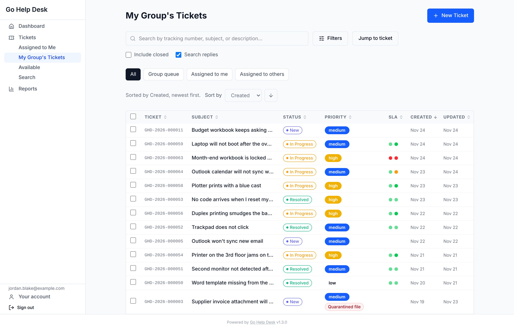
The ticket views in the sidebar. My Group's Tickets splits the group's tickets by who holds them.
- Requesters have no views. For a requester, Tickets is one link to a list of their own tickets, as before.
- The sidebar depends on your role. Administrators see Assigned to Me, My Group's Tickets, Available and Search. Staff see Assigned to Me, My Group's Tickets and Search, and Available too once an administrator has ticked Staff. Staff and administrators also see Reports below the ticket views.
- A ticket is in every view whose test it passes. Assigned to Me looks only at the person, and My Group's Tickets only at the group. Available lists a ticket only when it has neither. A ticket assigned to you and to one of your groups is in both Assigned to Me and My Group's Tickets. A ticket assigned to someone else, in a group that is not yours, is in neither.
- My Group's Tickets splits three ways. Group queue is the group's tickets that no person holds, Assigned to me are the ones you hold, and Assigned to others are the ones a teammate holds. All is the three together. If you are in no group, this view is empty, even for an administrator.
- Search typed in a view stays in that view. Text and filters narrow the view you are on. The Search view is the wide search: it covers every ticket you can see, and its results area says Searching all tickets you can see. With Limit staff to their group scope on, that means the tickets in your scope, which is more than your queue views show (see Assignment and scope). A tracking number or UUID typed in the box still jumps to the ticket from any view.
- Some filters are left out where they make no sense. Assigned to Me has no Assignee filter, because the assignee is always you. Available has no Assignee, Group or Requester filter: no ticket there has an assignee or a group, and a Requester filter would list tickets that are not available. My Group's Tickets offers every filter, and Search offers every filter except Awaiting my reply (next point).
- Awaiting my reply. On Assigned to Me and My Group's Tickets, a filter lists the tickets that are not Resolved or Closed and whose newest public message came from the requester's side, so they are waiting for you. That means no reply yet, a guest's message, or a message from the requester. Internal notes do not count, and neither does a reply from staff.
- Old links still work. A link from before 1.3.0 is translated when it is opened.
scope=mine, or no scope, opens Assigned to Me.scope=unassignedopens Available, andscope=allopens Search. A link that carries search text or filters, and no view, opens Search with them. A link to a view you may not use, such as Available for staff while Staff is not ticked, opens Assigned to Me without an error. - On a phone, the views are in the navigation drawer, in the same order as on a desktop. The My Group's Tickets choice wraps onto more than one row instead of scrolling.
- Over the API, the same lists are the
scopevaluesassigned_to_me,my_groups,unassignedandvisible, and theheld_byfilter. Every request that worked before returns the same tickets. See REST API: Searching tickets.
If your administrator limits staff to their group scope, tell staff who pick up new tickets. Under that setting the default view no longer lists unassigned tickets. Staff find them through Search, or in Available once an administrator has ticked Staff under Admin → System → Privacy → Available queue.
Search and filters
The ticket list has a search box, a Filters button and sortable column headings. New in 1.3.0 The filters, the sorting and the reply search are new. The search box was there before. For staff and administrators it works inside the view you are on, and the Search view is the one that covers every ticket you can see.

The Search view with the Filters panel open and four filters on. Each one shows as a chip with its own ×.
The search box
The box searches tracking number, subject and description. The last two use Postgres full-text search and are ranked by relevance. Results load as you type, after a short pause, with no minimum length. A spinner shows while they load.
- Tracking number searches use a prefix match: typing
GHD-2026-0matches all tickets in that series. - Subject and description searches split your text into words and prefix-match each one.
print jammatches a ticket with a word starting with "print" and a word starting with "jam", in any order or field. A match in the subject ranks above one only in the description. - Postgres ignores common English words such as "it", so searching for just "IT" finds nothing.
- Requesters only see results from their own tickets. Staff and administrators search the view they are on: a search typed in Assigned to Me, My Group's Tickets or Available stays in that view. To search every ticket you can see, use the Search view; its results area says Searching all tickets you can see. With Limit staff to their group scope off, that is every ticket. With it on, it is the tickets reported by or assigned to the staff member, tickets assigned to one of their groups, and tickets in a category or type their groups cover. Nothing is searched that the staff member could not open.
- A box with only spaces counts as empty.
- A filter narrows the view you are on, with or without text in the box. It never widens it. To filter across every ticket you can see, use the filters on the Search view.
Filters
Click Filters to open the panel. Each change applies at once, and the button shows how many filters are on. Filters combine with and: a ticket must match all of them. A filter can only narrow what you can already see. It never shows a ticket you could not open.
| Filter | What it does | Who sees it |
|---|---|---|
| Status | One or more statuses. | Everyone |
| Priority | One or more of critical, high, medium and low. | Everyone |
| Category, Type, Item | Narrow step by step: choose a category, then a type under it, then an item. Choosing a category matches every type and item under it. | Everyone |
| Created | A from date and a to date, both included. | Everyone |
| Requester | Pick a person from the suggestions, or type part of a name or email address (at least 2 characters) to match anywhere in it. Typed text also matches the name and address on guest tickets, and accounts that have since been deleted. Upper and lower case do not matter. | Staff and administrators |
| Assignee, Group | Tickets assigned to one person, or to one group. With Limit staff to their group scope on, staff can only choose a group they belong to. | Staff and administrators |
| Last updated | A from date and a to date for when the ticket last changed. | Staff and administrators |
| Came in by | Web, Email / guest, Phone, API or MCP. See How a ticket arrived. | Staff and administrators |
| SLA | Breached or At risk, the same two states the list's SLA indicator shows. It is only offered while SLA tracking is on. | Staff and administrators |
| Awaiting my reply | Tickets waiting for the help desk to answer. See Ticket list views. | Staff and administrators, on Assigned to Me and My Group's Tickets |
- Dates are in your own time zone, as your browser reports it.
- Each active filter shows as a chip under the box, with an × to remove it and a Clear all link. The filters are kept in the address, so a link to a filtered list opens the same list for the person you send it to, within what they are allowed to see.
- Not every view offers every filter; see Ticket list views.
- Requesters get the same panel with only the filters that make sense for their own tickets: Status, Priority, Category, Type, Item and Created.
- Include closed leaves closed tickets out unless it is ticked. A Status filter that names Closed shows closed tickets whatever Include closed says.
- The Requester filter works whatever Mask requester names in Audit Trail is set to. That setting changes what the audit views display. It does not stop a staff member who can see a ticket from searching by its requester's name.
Sorting
Click a column heading to sort by it, and click again to reverse the order. The sortable columns are Ticket (the number), Subject, Status, Priority, SLA (while SLA tracking is on), Created and Updated. The line above the table says how the list is sorted now.
- With no sort chosen, a search is ordered by best match, and a list with no search is newest first. Clicking a heading replaces best match. Sort by best match brings it back.
- Priority and SLA sort most urgent first the first time. Created and Updated sort newest first. The other columns sort in ascending order.
- The sort is kept in the address, like the filters.
- The Created and Updated headings appear when the window is wide. On a narrower window and on a phone, a Sort by menu with a reverse button covers every column.
- Requesters can sort by ticket number, subject, status, priority and created date. They are never sent when staff last touched a ticket, or the SLA, so those are not offered.
Search replies
The Search replies box is under the search box. It is ticked by default and only matters when there is text in the search box. With it ticked, a ticket also matches when one reply holds every word you typed. Words match as prefixes, as in the subject.
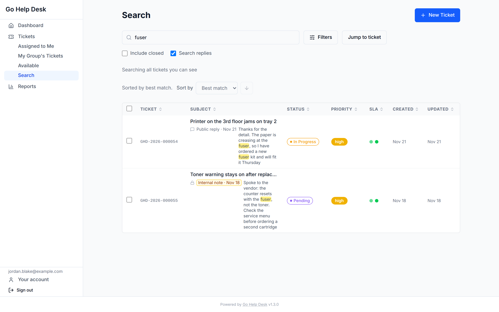
A staff member's search for "fuser". Each ticket that matched through a reply shows where the words were.
- A ticket found through a reply shows a short excerpt under its subject, with each matched word highlighted. A label says whether the words were in a Public reply or an Internal note, and the date. The excerpt never names the author.
- The words have to be in one reply. Words found in different replies do not combine, and neither do a word in a reply and a word in the subject.
- A ticket that matches on its own subject or description ranks ahead of one that only matches through a reply.
- Internal notes are never shown to requesters. Staff and administrators search public replies and internal notes. A requester searches public replies only, and never sees an excerpt of an internal note, even on a ticket that matched by its subject. The server decides this from the person's role, and nothing a browser or script sends can change it.
- Only the first 50,000 characters of a reply are searched. A word after that in a very long reply is not found.
- Untick Search replies to search subject, description and number only.
Limits on reply search
Reply search is built to stay quick on a help desk with millions of replies, and it has limits:
- It looks at the 2,000 newest matching replies you may see. Filters such as Status are applied after that, so a word that is in a very large number of replies can miss an older ticket that a filter would have kept. Use a more specific word.
- The reply part of a search has a five-second limit. If it runs out, the search is answered from ticket text only, and the page says so.
The two notices
When the page could not search the replies, an amber notice appears above the list. The results are still right for subjects, descriptions and tracking numbers.
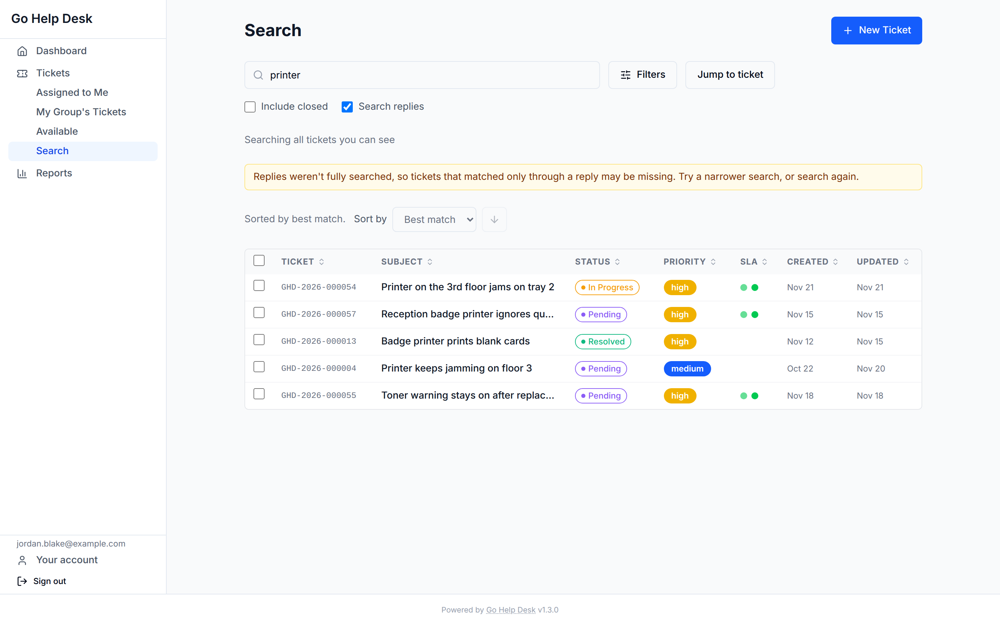
The notice when the five-second limit ran out.
The notice while the reply index is still being built after an upgrade.
- Replies weren't fully searched. The five-second limit ran out. Tickets that matched only through a reply may be missing. Try a narrower search, or search again.
- Reply search is still being prepared. The server is still building its reply index after the upgrade. Results cover ticket subjects and descriptions only until it finishes. Try again later. See Upgrading to 1.3.0: reply search.
Jump to ticket (staff and admin)
Staff and admins can type an exact tracking number or UUID in the search box, on any view, and click Jump to ticket to go straight to that ticket. If no match is found, an inline error is shown.
On a phone
On a narrow screen the search box takes a full row of its own, so it is no longer squeezed. Filters opens a full-screen dialog. Changes in it wait until you tap Show results, and Clear all empties it. Results are cards, with the reply excerpt under the subject and the sort menu above them. Bulk selection is for a desktop-width screen only. Long text on a ticket is covered under Tickets on a phone.
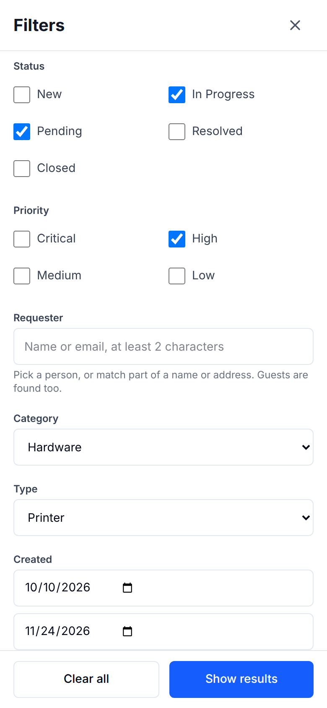
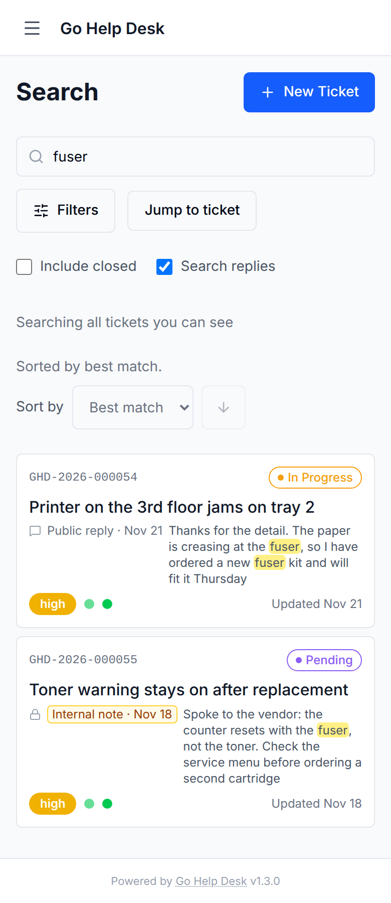
The filters dialog, and results with a reply excerpt, on a phone.
Not in 1.3.0
Tags and custom fields are not filters. There is no fuzzy or typo-tolerant matching, and no saved searches.
Dashboard New in 1.3.0
The dashboard shows how your own work and the desk are doing. The status cards, the View all tickets button and, for administrators, the By Client list are as they were. Four blocks are new, from top to bottom: a health card (administrators only), Your queue, then Needs attention and a 30-day trend side by side on a wide screen and stacked on a narrow one.
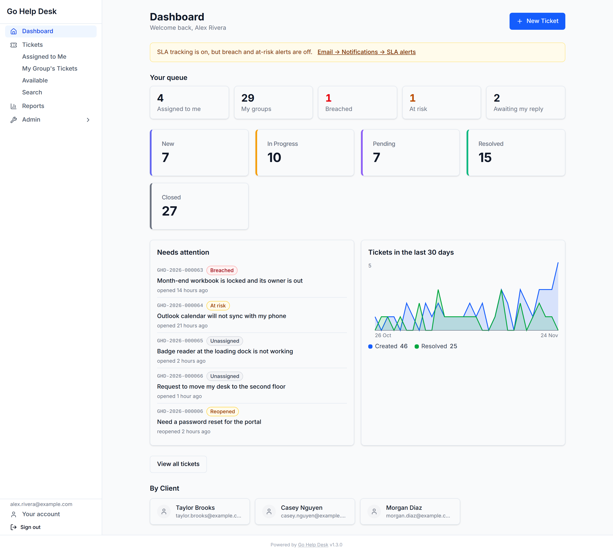
The dashboard for an administrator. Each number links to the ticket list it counts.
Your queue
A row of numbers, each a link to the ticket list showing exactly those tickets. Each number is the length of the list it opens.
- Staff and administrators see Assigned to me, My groups and Awaiting my reply. While SLA tracking is on they also see Breached and At risk. Breached is red and At risk is amber while they are above zero.
- The SLA numbers count the tickets assigned to you, not the whole desk. The desk's breaches are in Needs attention.
- Awaiting my reply counts your tickets that are waiting for the help desk to answer; see Ticket list views.
- A requester sees one number, Your tickets: their tickets that are not Closed.
Needs attention
Staff and administrators see up to five open tickets that need a look. Each ticket is listed once, under its first reason, checked in this order:
- Breached, while SLA tracking is on.
- At risk, while SLA tracking is on.
- Unassigned: in the Available queue. Administrators see these. Staff see them only while an administrator has ticked Staff under Admin → System → Privacy → Available queue.
- Reopened in the last seven days.
Each row shows its reason and how long ago the ticket was opened, or reopened. Breached and at-risk tickets are shown oldest first, and reopened ones most recently updated first. When there is nothing to show, the block says Nothing needs attention right now.
The 30-day trend
Staff and administrators see a chart of tickets created and tickets resolved on each of the last 30 days, today included, with the total of each. Days are counted in your own time zone, as your browser reports it. A ticket counts as resolved on the day it was resolved, or on the day it was closed if it was never resolved. A ticket that is reopened and not resolved again no longer counts on its old day.
Who sees which numbers
Every number and every row follows ticket scope. With Limit staff to their group scope on, a staff member's numbers, rows and trend include only the tickets their scope lets them open. A requester's dashboard is as it was, plus Your tickets, and every count on it is of their own tickets.
The health card
Administrators see a card at the top of the dashboard that lists up to four things that need attention, each with a link to where it is fixed:
- A newer release is available. The link opens the release notes in a new tab.
- SLA tracking is on, but its breach and at-risk alerts are off. The link goes to Admin → System → Email → Notifications → SLA alerts.
- The passkey requirement is suspended because passkeys are unavailable. The link goes to Admin → System → Authentication → Multi-factor authentication.
- The attachment scanner is unreachable while scanning is on. The link goes to Admin → System → File Attachments → Malware scanning.
When there is nothing to report, the card is one line: No problems to report. If the card cannot load, it says so and offers Retry. It never says all is well when it could not check. It has no Hide button: it states what is true now. The release, passkey and scanner items also appear in the banner at the top of every page, which does have a Hide button. The SLA alerts item is shown on the card only.
On a phone
The queue numbers wrap into two columns, and Needs attention and the trend stack under the status cards.
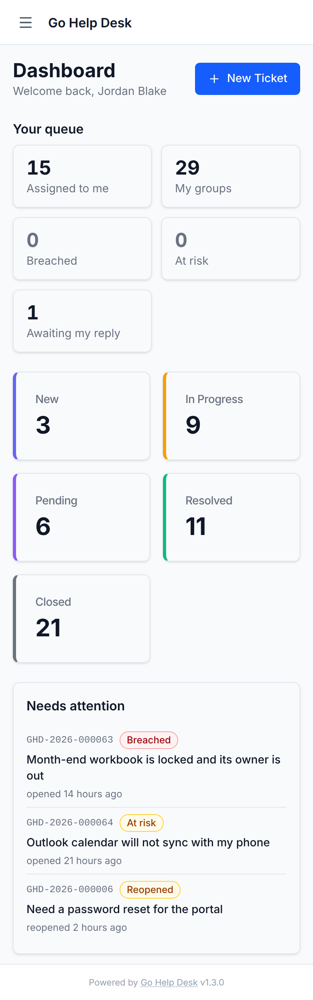
On a phone the queue counts wrap into two columns.
Over the API, the same numbers are GET /api/v1/dashboard, which takes an optional tz time zone and needs tickets:read for an API key or OAuth client. There is no MCP tool for it. See the API reference.
Reports New in 1.3.0
Reports shows how the desk is doing over a period: how long tickets take to resolve and to get a first response, how many met their SLA, how many came back, how old the open work is, how much arrived and who holds it. Staff and administrators see the Reports item in the sidebar, between Tickets and Admin. A requester has no Reports item, and opening the address sends them to the dashboard.
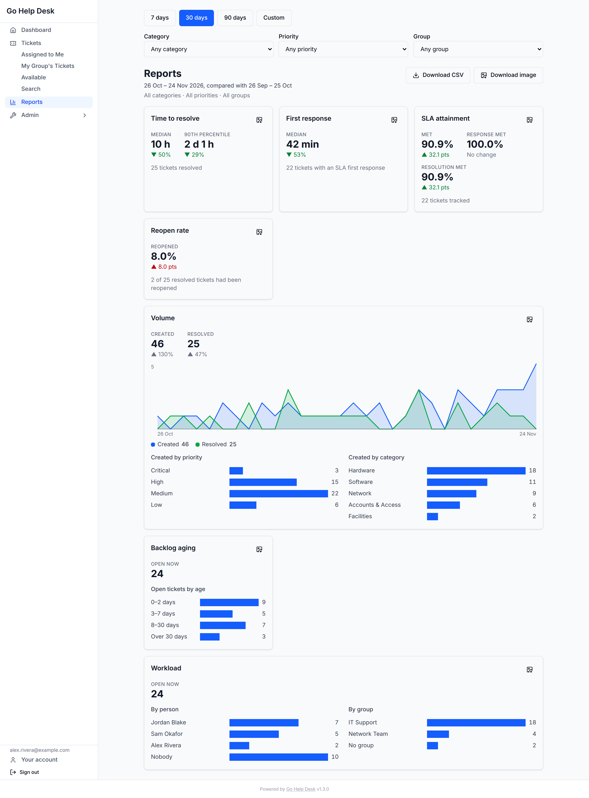
Reports for the last 30 days. Every period total and rate is compared with the previous period of the same length. Backlog, Workload and the volume breakdowns show the current period only.
What each card measures
| Card | What it shows |
|---|---|
| Time to resolve | From creation to the ticket being finished, as a median and a 90th percentile. A ticket is finished when it is resolved, or closed if it was never resolved. Time in Resolved before a reopen is included. |
| First response | The median time to the first response, as the SLA measured it. |
| SLA attainment | The share of tracked tickets whose response and resolution targets were both met, with the response and resolution rates beside it. A ticket left with no SLA policy, for example after a change to a priority that no policy covers, is left out. |
| Reopen rate | The share of finished tickets that were reopened at least once. |
| Volume | Tickets created and tickets resolved in the period, a daily chart, and the tickets created by priority and by category. |
| Backlog aging | Open tickets by age in whole days since creation, in four groups: 0 to 2, 3 to 7, 8 to 30 and over 30. |
| Workload | Open tickets by assignee and by group, with a row for tickets with no person and one for tickets with no group. |
- Time to resolve leaves out time spent Pending. A ticket held for a customer is not shown as slow, and the first response is likewise measured less the time Pending before it.
- First response and SLA attainment need SLA tracking. A ticket is timed only while SLA tracking is on, so these two cards cover only tickets that were timed. While tracking is off, they say so.
- Reopens before 1.3.0 are not counted. The number of reopens was not kept before this release, so the reopen rate counts reopens from 1.3.0 on.
- Backlog and Workload show the open tickets now. They have no comparison.
- A card with nothing to show says what it lacks, such as No tickets were resolved in this period, instead of showing zeros.
Period, comparison and filters
- The period is the last 7, 30 or 90 days (30 by default), or a custom range of dates. A custom range is at most 366 days. Dates are in your own time zone, as your browser reports it.
- Every period total and rate is compared with the previous period: the same number of days, ending the day before the period starts. A change is shown as a percentage, or in points for a rate, and is coloured by whether the direction is better or worse. When there is no data in the previous period, the card says so. Backlog, Workload and the breakdowns of volume by category and by priority show the current period only, with no comparison.
- Filters narrow every card: Category (a top-level category, with everything under it), Priority and Group. They apply to a ticket's current values, so a ticket moved from Hardware to Network counts as Network.
- The address holds the state. A refresh, or a link sent to a colleague, shows the same board, within what that person may see.
Who sees which numbers
Administrators count every ticket. Staff count the tickets they could open on the ticket list. With Limit staff to their group scope off that is every ticket. With it on, it is the tickets reported by them, assigned to them or to one of their groups, or in a category or type their groups cover. There is no separate permission for reports.
Downloads
- Download CSV writes the numbers on screen, with the period and filters, to a file.
- Download image makes a PNG of the whole board, and each card has its own image button. The image is the screen as your browser laid it out, so a phone gives a narrower image than a desktop.
- Both are made in your browser. Nothing is sent to the server for either one.
Over the API, the same numbers are GET /api/v1/reports/kpi, for staff and administrators, which needs tickets:read for an API key or OAuth client. There is no MCP tool for it. See the API reference.
Not in 1.3.0: scheduled or emailed reports, cuts by channel or agent, first-contact resolution (tickets solved in the first reply), and saved or custom reports.
Tickets on a phone
- Long text wraps and is never cut. A word or link with no break in it, such as a 300-character URL in a reply, wraps at the edge of its box, down to a 320-pixel-wide screen. This holds for everything a person wrote on a ticket: the subject, description, replies and internal notes, author names, attachment filenames, the requester line, the activity feed and its diffs, the status history, followers, the assignee, status names, category, type and item names, custom-field labels and values, tags, and the requester picker. The text is never shortened, rewritten or turned into a link, so it stays whole and can be copied.
- Fifteen compact places still end in "…" because they are one-line rows or chips where wrapping would break the row. None is text a person wrote on a ticket, and each, except the SAML private key, shows its full text when you hover over it: in the Linked tickets panel, the linked ticket line; in the desktop ticket table, the subject; in the reply box, a pending upload's filename and the preview in the canned-response picker; in the page frame, the signed-in email at the foot of the sidebar and the brand name in the mobile top bar; on the Dashboard, each client's name and email in the By Client cards; on the Reports page, each bar chart row's label (Backlog, Workload, and the Volume bars by category and priority); on the Account page, a passkey's label; in the authenticator-app setup, the secret under the QR code; on a ticket, each attachment's SHA-256, cut to its first 12 characters; on the Canned responses admin page, the body preview, cut to 80 characters; and on the Authentication page under System, the SAML certificate (its first line, with the whole text on hover) and the SAML private key (its first line followed by "…", with no hover text on purpose, because the key is a secret). A touch screen shows no hover text, so the two ticket rows also open the ticket, where the text wraps in full.
- The header buttons get their own row. On a narrow screen (below tablet width) the ticket page's action buttons sit on a row under the title and tracking number, which keep the full width.